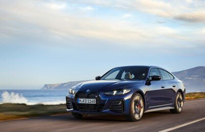
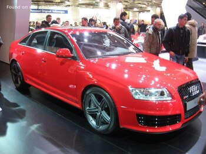

Технические характеристики автомобилей могут варьироваться в зависимости от модели: двигатель, мощность, крутящий момент и много другое.
BMW 4 series Начало выпуска 2024 | Купе Мощность : с 184 лс до 386 лс Длина 4787 мм (188.46 in.); Ширина 1852 мм (72.91 in.); Высота 1442 мм (56.77 in.); Колесная база 2856 мм (112.44 in.);
2008 Audi RS 6 (4F,C6) Начало выпуска 2008; Оконч. выпуска 2010 | Седан Мощность : 580 лс Длина 4928 мм (194.02 in.); Ширина 1889 мм (74.37 in.); Высота 1456 мм (57.32 in.); Колесная база 2846 мм (112.05 in.);